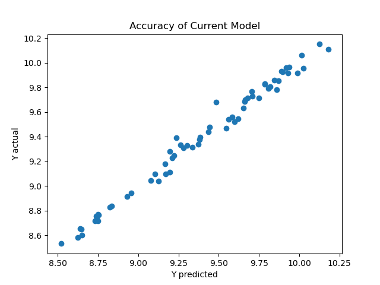
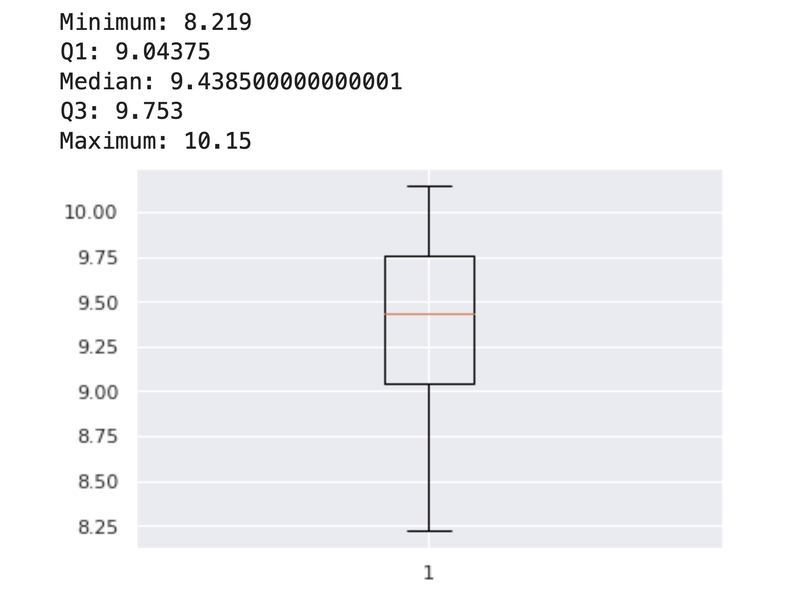

Welcome to our cutting-edge predictor page, where the power of data converges with advanced machine learning to illuminate the future of agricultural economics in India. Harnessing the predictive capabilities of our state-of-the-art model, this platform empowers you to make informed decisions about food subsidies, ensuring a strategic allocation of resources for a resilient and sustainable agricultural landscape.
Please input a Data Size of size greater than 0 and smaller or equal to 1. Give it some time to load (less than 10 seconds)
If not loading, please check your inputs
Health Index, Poverty and Malnourished Children MUST BE GREATER THAN 0
This plots y predicted against y actual. The closer the line is to y=x, the better the current model.
 {% endif %} {% if coefficients is defined and intercept is defined %}Coefficient, Health Index
{{ coefficients[0][0] }}
Coefficient, Poverty
{{ coefficients[0][1] }}
Coefficient, Malnourished Children
{{ coefficients[0][2] }}
{{ intercept[0] }}
{% endif %} {% if predictedY is defined %}{{ predictedY }}
{% endif %} {% if boxPlot is defined %}Box Plot of GNI/Capita from 2014-2019
 {% if predictedY is defined and predictedY <= 9.04375 %}Give subsidies to schools for food programs-school food programs, investment, etc
{% elif predictedY > 9.753%}Do further monitoring, but likely no need for agricultural subsidies.
{% else %}Do further monitoring!
{% endif %} {% endif %} {% if trainRMSE is defined %}{{ trainRMSE }}
{% endif %} {% if RMSE is defined %}{{ RMSE }}
{% endif %}